Phone-hacking scandal: Who's who
As another public figure resigns in the wake of the phone-hacking scandal, we look at the tangled web that links various individuals.
News Corporation
-
Rupert Murdoch CEO, News Corporation
- Father of James Murdoch and Elisabeth Murdoch
- Employed Rebekah Brooks
James Murdoch Chairman and CEO, Europe and Asia, News Corporation
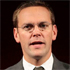
- Employed James Harding, editor of The Times
Elisabeth Murdoch Founder, Shine Productions

Andy Coulson Former Editor, News of the World under Les Hinton
- Employed by David Cameron (Jul 2007 to Jan 2011)
Neil Wallis Consultant, Outside Organisation
- Former deputy to Andy Coulson
- PR adviser to Champneys; Metropolitan Police
Les Hinton CEO, Dow Jones & Company (resigned)
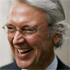
- Key lieutenant to Rupert Murdoch
Rebekah Brooks CEO, News International (resigned)
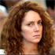
- Employed by Rupert Murdoch
- Editor under James Murdoch
- Married to Charlie Brooks
- Met with David Cameron on several occasions since his appointment as PM
The Times
- Part of News Corp, The Times employed Hayman as a columnist
BSkyB Broadcaster
- Former takeover target of Rupert Murdoch
- Directors considering the future of James Murdoch as Chair
Others
The Guardian
- Gave information on Andy Coulson to Nick Clegg; Steve Hilton
Charlie Brooks Horse trainer
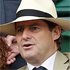
- Friends with David Cameron at Eton
- Runs therapy centre at Champneys
- Married to Rebekah Brooks
Stephen Purdew Co-owner, Champneys health resorts
- Friends with Keith Vaz; Sir Paul Stephenson
Matthew Freud Founder, Freud Communications
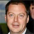
- Funded private jet to facilitate David Cameron's meeting with Rupert Murdoch in 2008
- Married to Elisabeth Murdoch
Champneys Health spa
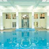
- Sir Paul Stephenson enjoyed a five-week stay at Champneys
- Neil Wallis provided PR advice to Champneys
- Charlie Brooks runs therapy centre here
Metropolitan Police
Sir Paul Stephenson Commissioner, Metropolitan Police (resigned)
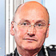
- Friends with Stephen Purdew, he enjoyed a five-week free stay at Champneys
John Yates Assistant commissioner, Metropolitan Police (resigned)
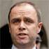
- Oversaw the first phone-hacking investigation with Andy Hayman
Andy Hayman Former assistant commissioner, Metropolitan Police
- Oversaw the first phone-hacking investigation with John Yates
- Columnist for The Times
Politicians
David Cameron Prime Minister
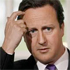
- Friends at Eton with Charlie Brooks
- Employed Andy Coulson (Jul 2007 to Jan 2011)
- Met Rebekah Brooks on several occasions since becoming PM
- Convervative party links to John Whittingdale
Nick Clegg Deputy prime minister
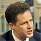
- Received information from The Guardian
- Forwarded information to David Cameron
John Whittingdale Chair, culture, media and sport committee

- Facebook friends with Rebekah Brooks; Elisabeth Murdoch; Les Hinton
- Conservative party links to David Cameron
Keith Vaz Chair, home affairs committee
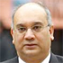
- Friends with Stephen Purdew
- Committee interviewed Andy Hayman and John Yates
Steve Hilton Director of strategy for David Cameron
- Received information from The Guardian
- Forwarded information to Edward Llewellyn
Edward Llewellyn No 10 chief of staff
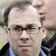
- Did not forward information to David Cameron